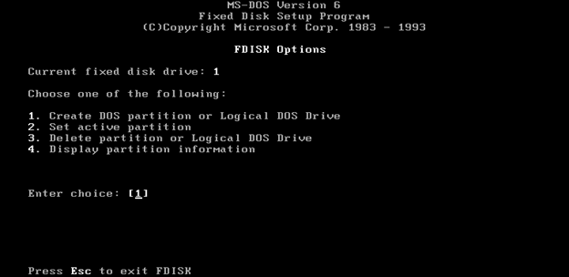
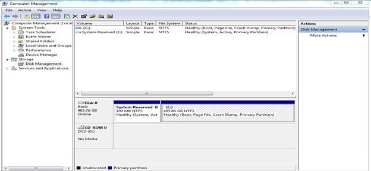
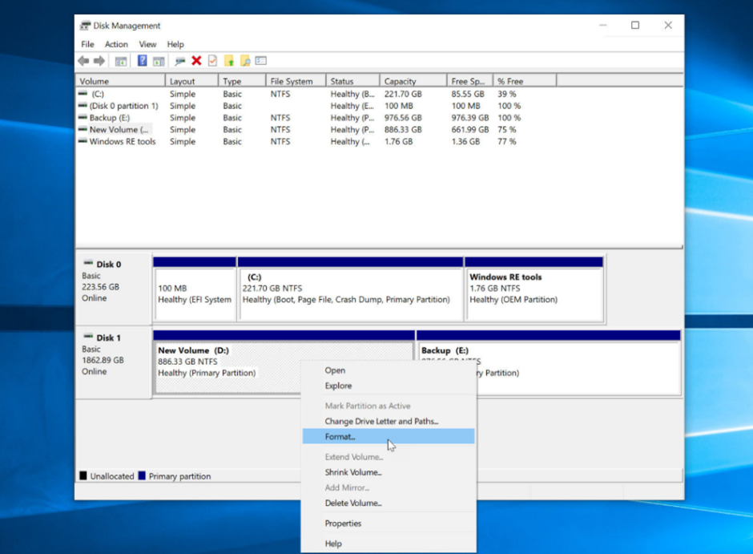
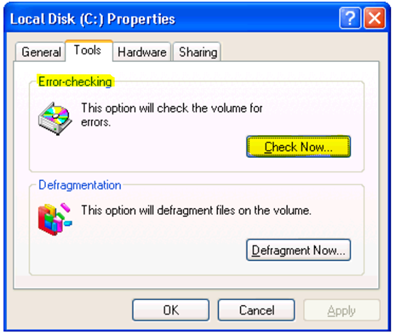
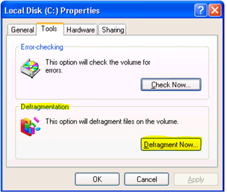
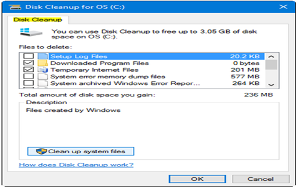

After installing hardware and software, it is important that we make sure that the computer runs perfectly.
Testing the computer through stress tests is a good example to check if there are remaining issues in the computer. There are procedures such as gathering test information, validating, and responding to these may help in making sure that everything runs smoothly.
Make sure that you have reviewed the use of diagnostic tools before proceeding to this lesson.
The following are different disk management tools and procedures that can optimize a PC to its full performance as well as check errors/issues along the way.
fDisk
A command-line tool that creates and deletes partitions on a hard drive. It is available from Windows 2002 onwards. For newer units (from Windows XP onwards) the disk management tool is used.

Disk Management Tool
This is used to manage disks and drives (like internal and external hard drives), create partitions, and format devices. This is used on newer versions of Microsoft Windows.

Format
It is the process of preparing a data storage device (i.e. hard drive, USB drive, solid-state drive) to store information.

ScanDisk or CHKDSK
Used to check integrity of files and folders in your unit. This can also be used to check the disk surface for physical errors.

Defrag
It optimizes space on hard drive and allow faster access to programs and data.


Disk Cleanup
A software utility for Windows that lets users remove files and speed up computer performance.
System File Checker (SFC)
A tool in Microsoft Windows that allows users to scan and restore corrupt Windows system files. This is available in Windows 98 and later.